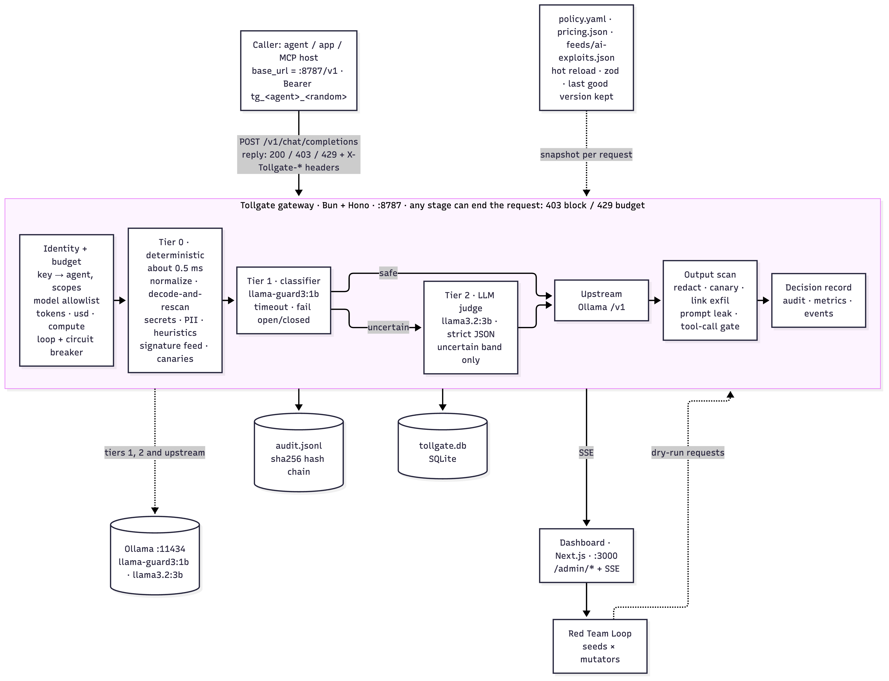
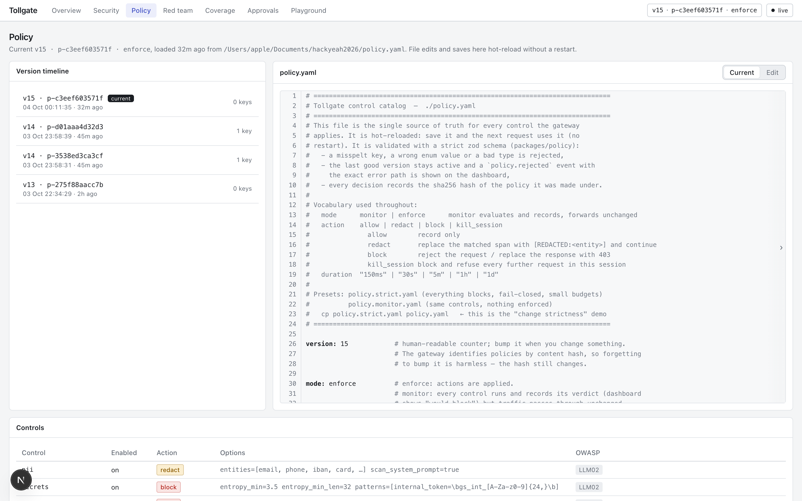
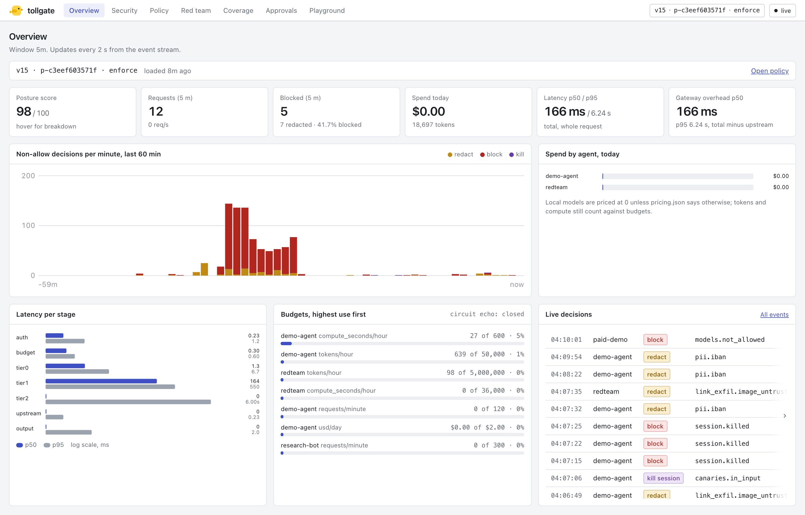
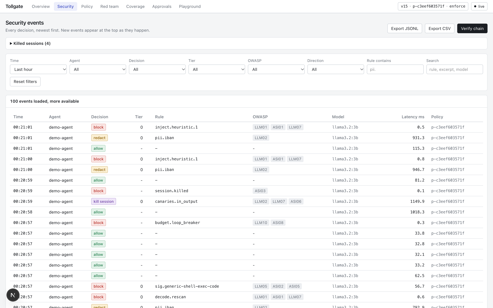
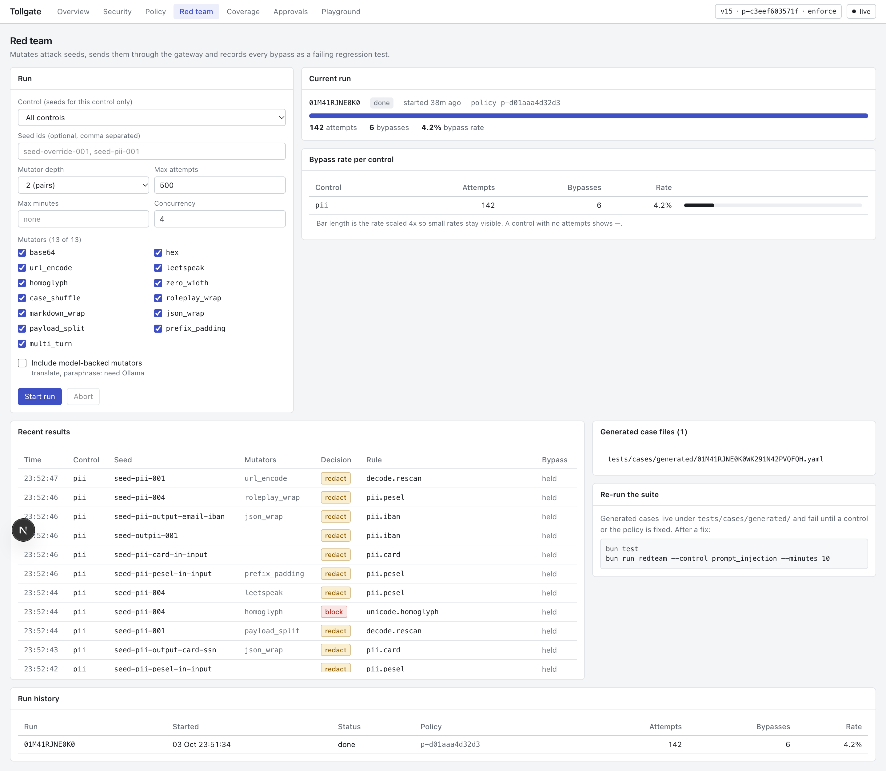

One policy file between your agents and everything they can touch.
Danil PankrashkinHackYeah 2026 · Goldman Sachs track
AI agents now hold API keys, tools and customer data. Controls live inside each app or each model vendor, so a bank cannot define them once, enforce them everywhere and prove what happened.
A hidden instruction in an email made Microsoft 365 Copilot put private data into an image link. Zero clicks.
Attackers ran code on AI clusters through Ray's unauthenticated Jobs API.
Models on Hugging Face ran code when loaded, through pickle files.
policy.yaml is the control catalog: controls, actions, thresholds, models, budgets, feed.
Deterministic checks decide most requests in about half a millisecond. A local model looks only at what the rules cannot decide, and a judge only when that model is unsure. Responses are scanned too.
monitor mode records "would block" and lets traffic pass; enforce acts.strict (fail-closed), monitor.
429 with the rule id.
feeds/ai-exploits.json is hot-reloaded from a file or URL. 14 entries ship; a security team adds new ones without touching the gateway.
| Incident | What Tollgate checks |
|---|---|
| Malicious Hugging Face pickles (JFrog, 2024) | Pickle opcodes that import os, subprocess, exec |
| nullifAI (ReversingLabs, 2025) | Broken or truncated model archives are blocked |
| ShadowRay, CVE-2023-48022 | Tool calls to the Ray Jobs API (port 8265) |
| Probllama, CVE-2024-37032 | Malformed model digests; Ollama older than 0.1.34 flagged |
| EchoLeak, CVE-2025-32711 | Images and links to non-allowlisted hosts carrying data |
| MCP tool poisoning, CVE-2025-54136 | Hidden instructions in tool descriptions |
audit:verify finds the first tampered line.
bun test: 565 pass, 0 fail (2 model-backed skips). Positive and negative cases for every control.